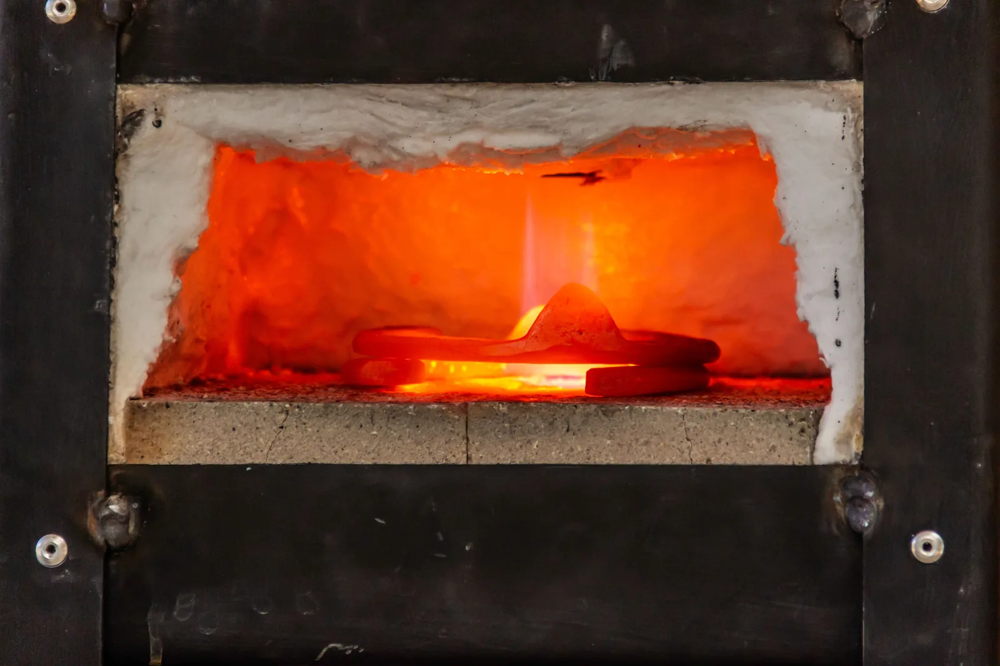

Sisäenergia, lämpömäärä ja energian säilyminen
Miksi polkupyörän pumppu kuumenee, kun rengasta pumpataan, vaikka pumppua ei lämmitetä millään?
Pohjatiedot
- Työ $W = Fs$ siirtää energiaa, ja Joulen kokeessa työ lämmitti vettäluku Työ ja energia
- Kaasun mikromalli: lämpötila kertoo hiukkasten keskimääräisestä liike-energiastaluku Termodynaaminen systeemi, tilanmuuttujat ja lämpötila
Ydinpolku: etene vaiheiden mukaan. Ydinpolkuun kuuluvat laskujen lisäksi tutkimukset, selitykset ja kuvaajat. Valinnainen-merkityt tehtävät tarjoavat lisäharjoittelua. Valinnaisia tehtäviä 6.
Pohdinta
Pumppaat polkupyörän renkaaseen kovan paineen. Pumpun alapää, jossa ilma puristuu, on lopuksi lämmin kädessä. Kun pumppu on hetken levännyt, se on taas huoneenlämpöinen. Toisaalta kun renkaasta päästää ilmaa venttiilin kautta, venttiili tuntuu viileältä, vaikka sitä ei jäähdytetä millään.
Mistä pumpun ilma saa lisäenergiaa, jos sitä ei lämmitetä, ja mihin tuo energia joutuu, kun pumppu jäähtyy?
Valinnainen Kertaa: lämpötilan mikromalli
Ennusta
Tee ennusteet ennen tutkimista 2 kysymystä
Ennuste 1: miksi puristettu ilma kuumenee?
Ennuste 2: nopea vai hidas työntö?
Tutki
Simulaatio
Käyttöohje
Työnnä mäntää puristaa kaasun tilavuuteen $75\,\%$, ja Vedä ulos palauttaa männän. Hiukkasen väri kertoo sen nopeuden. Kun hiukkanen osuu liikkuvaan mäntään, se saa hetkeksi pitkän jäljen ja vihreän kehän: se kimpoaa nopeampana. Pylväät näyttävät männän kaasuun tekemän työn $W$, seinien läpi kaasuun siirtyneen lämpömäärän $Q$ ja sisäenergian muutoksen $\Delta U$. Männän nopeus valitsee hitaan tai nopean työnnön, Seinät eristetyt tai johtavat seinät ja Animaatio vain tahdin: se ei muuta lukemia. Malli on täysin toistettava, koska työntö alkutilasta alkaa aina samasta kaasun tilasta.
Mallin oletukset
Luvut ovat mallin arvoja, eivät mittauksia oikeasta pumpusta. Mallin kaasu vastaa $0{,}50\,\text{g}$:aa ilmaa: sen sisäenergia kasvaa $0{,}359\,\text{J}$ jokaista kelviniä kohden. Kaasussa on $40$ hiukkasta, jotka liikkuvat tasossa eivätkä törmää toisiinsa. Ilman molekyylit myös pyörivät, joten jokaisella hiukkasella on liike-energian lisäksi pyörimisen energiaa, jota kuva ei näytä. Kiinteä seinä palauttaa siihen osuvan hiukkasen satunnaiseen suuntaan ja jakaa sen energian uudelleen liikkeen ja pyörimisen kesken; eristetty seinä ei muuta hiukkasen kokonaisenergiaa. Näin kaasu pysyy tasapainossa, ja hidas eristetty työntö vastaa ilman hidasta puristusta ilman lämmönsiirtoa. Sille fysiikka antaa $T_2 = T_1 (V_1/V_2)^{\gamma - 1} = 293\,\text{K} \cdot (4/3)^{0{,}4} \approx 329\,\text{K}$, kun ilmalle $\gamma \approx 1{,}4$; simulaatio antaa $330\,\text{K}$. Pieni ero johtuu lähinnä siitä, että hiukkasia on vain $40$: toisella satunnaisella alkutilalla työ vaihtelisi noin $11$–$15\,\text{J}$. Oikeassa pumpussa mäntä on paljon hitaampi kuin molekyylit (noin $500\,\text{m/s}$), joten siellä ero syntyy lähinnä siitä, ehtiikö lämpö siirtyä pois.
Laskennan selitys
Mäntään osuva hiukkanen kimpoaa kuin pallo mailasta: jos mäntä liikkuu sitä vastaan nopeudella $u$, hiukkasen nopeus männän suunnassa kasvaa $2u$:n verran, $v_x' = 2u - v_x$. Männän työ $W$ on hiukkasten näin saama liike-energia, yhtä suuri kuin männän voima kertaa matka. Ulos vedettäessä hiukkaset kimpoavat hitaampina ja $W$ on negatiivinen. Eristetyssä sylinterissä $Q = 0$ ja $\Delta U = W$. Johtava seinä on huoneen lämpötilassa $293\,\text{K}$: siihen osuva hiukkanen kimpoaa pienemmällä energialla, jos kaasu on huonetta lämpimämpää, ja suuremmalla, jos kaasu on kylmempää. Näin siirtynyt energia on lämpömäärä $Q$, ja $\Delta U = Q + W$. Hidas mäntä liikkuu noin $50$ kertaa hitaammin kuin hiukkaset keskimäärin, nopea vain noin $3{,}5$ kertaa hitaammin. Nopeaan mäntään hiukkaset osuvat suuremmalla suhteellisella nopeudella, eikä energia ehdi jakautua tasaisesti, joten kaasu vastustaa mäntää enemmän ja samalla matkalla työ on suurempi; eristetyssä sylinterissä lämpötila nousee täsmälleen työn verran enemmän, $\Delta T = W/C$. Lämpötila lasketaan hiukkasten kokonaisenergiasta ja paine $p/p_0$ lämpötilasta ja tilavuudesta.
Simulaatiossa on sylinteri, jossa on 40 kaasun hiukkasta, ja mäntä. Kokeile vapaasti, myös männän vetämistä ulos.
Koe 1: vain männän nopeus muuttuu
Testaa ennuste 2. Seinät lukitaan eristetyiksi, ja vain männän nopeus muuttuu. Paina simulaatiossa Alkuun ja Työnnä mäntää. Kun mäntä on pysähtynyt ($V = 75\,\%$), paina Kirjaa mittaus. Vaihda sitten männän nopeus, paina taas Alkuun ja Työnnä mäntää, ja kirjaa uudelleen. Vertaa kummallakin kerralla sisäenergian muutosta $\Delta U$ ja työtä $W$ sekä lämpötilan nousua $\Delta T$. Hidas työntö kestää noin $19\,\text{s}$; Animaatio: nopea nopeuttaa katselua muuttamatta lukemia.
Alkutila: männän nopeus = hidas, seinät = eristetty. Vakiona: seinät. Muutetaan: männän nopeus.
| männän nopeus | $W$ $(\text{J})$ | $\Delta U$ $(\text{J})$ | $\Delta T$ $(\text{K})$ |
|---|
Lisää tutkittavaa 2 tehtävää
Koe 2: vain seinät muuttuvat
Testaa ennuste 1. Männän nopeus lukitaan hitaaksi, ja vain seinät muuttuvat. Tee ensin työntö eristetyssä sylinterissä (Alkuun, Työnnä mäntää) ja kirjaa, kun mäntä on pysähtynyt. Vaihda sitten seinät johtaviksi, paina Alkuun ja Työnnä mäntää. Kun mäntä on pysähtynyt, odota, kunnes $T$ on noin $293\,\text{K}$, ja kirjaa vasta sitten. Seuraa samalla pylväitä: ylöspäin osoittava pylväs on kaasuun tullutta energiaa, alaspäin osoittava kaasusta lähtenyttä.
Alkutila: männän nopeus = hidas, seinät = eristetty. Vakiona: männän nopeus. Muutetaan: seinät.
| seinät | $W$ $(\text{J})$ | $Q$ $(\text{J})$ | $\Delta U$ $(\text{J})$ | $T$ $(\text{K})$ | $p/p_0$ |
|---|
Johtopäätös: mikä kasvattaa sisäenergiaa?
Kirjoita taulukoidesi perusteella lyhyt johtopäätös.
Miten lämpötilan nousu riippui tehdystä työstä eristetyssä sylinterissä? Mihin työn tuoma energia joutui johtavassa sylinterissä? Minkä ennusteen 1 selityksistä mittauksesi kumoavat, ja millä lukemilla?
Mallivastaus
Eristetyssä sylinterissä lämpötila nousi sitä enemmän, mitä enemmän mäntä teki työtä: hitaalla työnnöllä $W = +13{,}1\,\text{J}$ ja $\Delta T \approx 37\,\text{K}$, nopealla $W = +19{,}1\,\text{J}$ ja $\Delta T \approx 53\,\text{K}$, kummallakin noin $2{,}8\,\text{K}$ joulea kohden. Koko työ jäi kaasuun, $\Delta U = W$. Johtavassa sylinterissä sama puristus teki työn $W \approx +12{,}4\,\text{J}$, mutta yhtä suuri energia lähti lämpönä seinien läpi, $Q \approx -12{,}4\,\text{J}$, ja lämpötila palasi $293\,\text{K}$:iin, vaikka paine jäi $1{,}33$-kertaiseksi. Siksi Ainon selitys (paine nostaa lämpötilan) ja Cemin selitys (lämpö tiivistyy) eivät pidä: sama puristus antoi eri lämpötilan sen mukaan, jäikö energia kaasuun. Lukemat ovat mallin laskemia; oikeasta pumpusta saman voisi mitata lämpömittarilla.
Arvioi oma vastauksesi
Rastita kohdat, jotka omassa vastauksessasi jo on.
Kertaa asia teoriasta ja harjoittele tehtävillä.
Teoria
Ydinajatus
Luvussa Työ ja energia työ todettiin tavaksi siirtää energiaa, ja Joulen koe näytti, että mekaaninen työ voi lämmittää vettä: painon työ kasvatti veden sisäenergiaa, vaikka vettä ei lämmitetty. Vesi ei sisällä ”lämpöä”. Systeemin sisäenergia $U$ on sen hiukkasten liike-energian ja hiukkasten välisten vuorovaikutusten energian summa. Luvussa Energialajit ja energian säilyminen tätä energiaa kutsuttiin lämpöenergiaksi; tarkempi nimi on sisäenergia. Lämpötila kuvaa hiukkasten lämpöliikkeen voimakkuutta: kaasussa se kertoo hiukkasten keskimääräisestä liike-energiasta. Kun aineen lämpötila nousee eikä olomuoto muutu, hiukkasten liike voimistuu ja sisäenergia kasvaa. Lämpötila ja sisäenergia eivät silti ole sama asia, sillä olomuodon muuttuessa sisäenergia muuttuu, vaikka lämpötila pysyy samana: kun esimerkiksi puhdas jää sulaa normaalipaineessa, sisäenergia kasvaa, mutta lämpötila pysyy $0\,{}^\circ\text{C}$:ssa. Sisäenergia riippuu myös aineen määrästä: iso järvi sisältää paljon enemmän sisäenergiaa kuin kuppi kuumaa teetä, vaikka järvi on kylmempi.
Systeemin sisäenergiaa voi muuttaa kahdella tavalla. Ensimmäinen on työ: kun pumpun mäntä puristaa ilmaa, ympäristö tekee kaasuun työtä, ja kaasun sisäenergia kasvaa, koska liikkuva mäntä osuu hiukkasiin kuin maila palloon ja ne kimpoavat nopeampina. Simulaatiossa tämän näkee hiukkastasolla. Siksi pumppu kuumenee. Toinen on lämpö: kun kaksi eri lämpötilassa olevaa kappaletta koskettavat, energiaa siirtyy itsestään kuumemmasta kylmempään, kunnes lämpötilat ovat samat. Näin siirtynyttä energiaa sanotaan lämmöksi, ja siirtyneen energian määrä on lämpömäärä $Q$. Lämpö on siis energian siirtymistä, ei aineen ominaisuus: kappaleella on lämpötila ja sisäenergia, mutta ei lämpöä.
Energia säilyy. Kun systeemiin siirtyy energiaa lämpönä tai työnä eikä systeemin liike- tai potentiaalienergia muutu, sen sisäenergia kasvaa täsmälleen siirtyneen energian verran, ja kun energiaa siirtyy pois, sisäenergia pienenee yhtä paljon. Tämä on termodynamiikan ensimmäinen pääsääntö: energian säilymisen laki kirjoitettuna lämmölle ja työlle. Eristetty systeemi on suljettu systeemi, johon tai josta ei myöskään siirry energiaa lämpönä eikä työnä. Sen kokonaisenergia pysyy vakiona, vaikka energia sen sisällä vaihtaisi muotoa.

Termodynamiikan ensimmäinen pääsääntö
Sisäenergian muutos on systeemiin tuodun lämpömäärän ja systeemiin tehdyn työn summa:
$$\Delta U = Q + W$$
missä $\Delta U$ on sisäenergian muutos (J), $Q$ systeemiin siirtynyt lämpömäärä (J) ja $W$ ympäristön systeemiin tekemä työ (J). Merkit kertovat suunnan: $Q$ on positiivinen, kun lämpöä siirtyy systeemiin, ja negatiivinen, kun sitä siirtyy pois; $W$ on positiivinen, kun ympäristö tekee työtä systeemiin (esimerkiksi puristaa kaasua), ja negatiivinen, kun systeemi tekee työtä ympäristöön (kaasu laajenee ja työntää mäntää). Kaikki termit ovat jouleja, samaa yksikköä kuin työ luvussa Työ ja energia, ja männän kaasuun tekemä työ lasketaan samoin kuin siellä, voiman ja matkan tulona.
Yleinen virhekäsitys
Arkikielessä sanotaan, että kappaleessa ”on lämpöä” tai että lämpö ”varastoituu”. Fysiikassa lämpö on energian siirtymistä lämpötilaeron vuoksi, ja se, mikä kappaleeseen varastoituu, on sisäenergiaa. Toinen virhe on pitää lämpötilaa ja sisäenergiaa samana asiana: kuuman kipinän lämpötila on tuhansia asteita, mutta sen sisäenergia on pieni, koska siinä on vähän ainetta. Kolmas virhe on ajatella, että sisäenergiaa voi muuttaa vain lämmittämällä. Pumpun ilma kuumenee ilman mitään lämmönlähdettä, koska siihen tehdään työtä.
Tiivistelmä
- Sisäenergia $U$ on systeemin hiukkasten liike-energian ja hiukkasten välisten vuorovaikutusten energian summa. Se kasvaa, kun lämpötila nousee olomuodon pysyessä samana, ja riippuu myös aineen määrästä. Lämpötila ja sisäenergia eivät ole sama asia.
- Lämpö on energian siirtymistä kuumemmasta kylmempään lämpötilaeron vuoksi; siirtynyt energia on lämpömäärä $Q$. Kappaleella ei ”ole lämpöä”.
- Sisäenergiaa muuttavat lämpö ja työ: $\Delta U = Q + W$. Sisään siirtyvä energia on positiivista, ulos siirtyvä negatiivista.
- Energia säilyy: tämä on termodynamiikan ensimmäinen pääsääntö. Eristetyn systeemin kokonaisenergia pysyy vakiona.
Valinnainen Palaa ennusteisiisi
Vertaa ennusteitasi kokeisiin ja malliin $\Delta U = Q + W$. Palaa sitten alun kysymykseen: mistä pumpun ilma saa lisäenergiaa, ja mihin energia joutuu, kun pumppu jäähtyy? Miksi venttiilistä purkautuva ilma tuntuu viileältä? Voit kokeilla simulaatiossa, mitä tapahtuu, kun mäntää vedetään ulos.
Muuttaisitko ennustettasi?
Esimerkit
Kun olet opiskellut luvun teorian, siirry ohjattuihin esimerkkeihin. Ensimmäisessä seuraat mallilaskua vaihe vaiheelta, seuraavissa teet valinnat itse, ja vihjeet auttavat, jos jäät jumiin.
Esimerkki 1: Pumpun ilman sisäenergia
Pumpun sylinterissä on ilmaa. Mäntää painetaan alas, jolloin ympäristö tekee ilmaan työn $150\,\text{J}$. Samalla kuumenevasta ilmasta siirtyy sylinterin seinien kautta ympäristöön lämpömäärä $40\,\text{J}$. Kuinka paljon ilman sisäenergia muuttuu?
Vaihe 1/7
Tunnetut ja kysytty. Ilma on systeemi. Ympäristö tekee työtä systeemiin, joten $W = +150\,\text{J}$. Lämpöä siirtyy systeemistä pois, joten $Q = -40\,\text{J}$. Kysytty on sisäenergian muutos $\Delta U$.
Vaihe 2/7
Periaate. Energia säilyy: systeemin sisäenergia muuttuu täsmälleen sen verran kuin siihen siirtyy energiaa lämpönä ja työnä. Tämä on termodynamiikan ensimmäinen pääsääntö, ja se pätee, koska ilma on selvästi rajattu systeemi, jonka rajan yli energia siirtyy vain työnä ja lämpönä.
Vaihe 3/7
Kaava ratkaistuna. Kysytty $\Delta U$ on ensimmäisessä pääsäännössä jo yksin vasemmalla puolella, joten yhtälöä ei tarvitse muokata:
$$\begin{aligned} \Delta U &= Q + W \end{aligned}$$
Vaihe 4/7
Yksikkömuunnokset. Ei tarvita: sekä $Q$ että $W$ on annettu jouleina, ja tulos halutaan jouleina. Etumerkit sen sijaan on päätettävä: energia systeemiin on positiivista ja systeemistä pois negatiivista.
Vaihe 5/7
Sijoitus. Sijoitetaan arvot etumerkkeineen:
$$\begin{aligned} &\Delta U = Q + W \\ &= -40\,\text{J} + 150\,\text{J} \\ &= 110\,\text{J} \end{aligned}$$
Vaihe 6/7
Tulos. Ilman sisäenergia kasvaa $110\,\text{J}$. Tulos ilmoitetaan kokonaisina jouleina, koska sekä työ että lämpö on annettu kokonaisina jouleina.
Vaihe 7/7
Järkevyys. Työ toi ilmaan $150\,\text{J}$ ja lämpönä lähti vain $40\,\text{J}$, joten sisäenergian on kasvettava ja ilman lämpötilan noustava. Jos sama $150\,\text{J}$:n työ tehtäisiin niin hitaasti, että kaikki työn tuoma energia ehtisi siirtyä lämpönä pois, olisi $Q = -150\,\text{J}$ ja $\Delta U = 0$, eikä lämpötila muuttuisi. Nyt lämpöä lähtee vähemmän, joten tulos on tämän rajatapauksen ja pelkän työn $150\,\text{J}$ välissä.
Valinnainen Esimerkki 2: Etsi virhe
Valinnainen Esimerkki 3: Sovella uuteen tilanteeseen
Tulimännässä on suljettu sylinteri, jonka pohjalla on taulaa. Mäntä painetaan kämmenellä nopeasti alas, ja puristuva ilma kuumenee niin, että taula syttyy. Kämmen työntää mäntää keskimäärin 75 N:n voimalla 8,0 cm:n matkan, ja puristuksen aikana ilmasta ehtii siirtyä seiniin lämpömäärä $0{,}60\,\text{J}$.
Kuinka paljon ilman sisäenergia kasvaa? Oleta, että koko kämmenen työ tehdään ilmaan (kitka jätetään pois). Vastaa jouleina.
Vihje 1: ohjaava kysymys
Mikä on systeemi, ja kumpaan suuntaan energia siirtyy työnä ja kumpaan lämpönä?
Vihje 2: mikä yhteys
Männän työ on $W = Fs$ keskimääräisellä voimalla, ja $\Delta U = Q + W$. Systeemistä poistuva lämpö on negatiivinen.
Vihje 3: välivaihe
$Q = -0{,}60\,\text{J}$. Laske $\Delta U = Q + W$.
Näytä ratkaisu
Annettu
systeemi on sylinterin ilma; kämmenen voima $F = 75\,\text{N}$ (keskimäärin), matka $s = 8{,}0\,\text{cm}$, ilmasta seiniin siirtyvä lämpö $0{,}60\,\text{J}$; kitka jätetään pois
Kysytty
ilman sisäenergian kasvu $\Delta U$ jouleina
Periaate
Energia säilyy, joten sisäenergian muutos on systeemiin siirtyneiden lämmön ja työn summa. Mäntä on ympäristöä, joka tekee ilmaan työn $W = Fs$, koska voima ja siirtymä ovat samansuuntaiset ja keskimääräinen voima tunnetaan. Lämpöä siirtyy ilmasta pois, joten $Q$ on negatiivinen.
Kaava
$$\Delta U = Q + W = Q + Fs$$
Muunnokset
Matka metreiksi:
jolloin $Fs$ tulee jouleina ($1\,\text{N}\cdot\text{m} = 1\,\text{J}$).
Sijoitus
Vastaus
$5{,}4\,\text{J}$
Kaksi merkitsevää numeroa kuten tiedoissa $0{,}60\,\text{J}$ ja $8{,}0\,\text{cm}$.
Järkevyys
Puristus on niin nopea, että vain pieni osa työstä ($0{,}60\,\text{J}$ eli $10\,\%$ luvusta $6{,}0\,\text{J}$) ehtii siirtyä pois, joten $\Delta U$ on lähellä työtä $6{,}0\,\text{J}$ ja positiivinen. Muutama joule riittää kuumentamaan sylinterin pienen ilmamäärän taulan syttymislämpötilaan. Jos lämpöä ei siirtyisi lainkaan, tulos olisi $6{,}0\,\text{J}$.
Kertaa luvun käsitteet
Jos valitset Kertaa myöhemmin, kortti siirtyy kertauspakkaasi.
- Mekaaninen työ
- Voiman avulla siirtyvä energia saadaan voiman ja voiman suuntaisen matkan tulona.$$W = Fs$$
- Termodynamiikan ensimmäinen pääsääntö
- Sisäenergia muuttuu lämmön siirtymisen ja systeemiin tehdyn työn vaikutuksesta.$$\Delta U = Q + W$$
- Energian säilyminen
- Energia ei synny eikä häviä, vaan siirtyy ja muuntuu eri muotoihin.
Tehtävät
Taso 1 · perusharjoitus 9 tehtävää
Yksi kaava tai yksi päättelyaskel. Ydintehtävät ensin, loput lisäharjoitusta.
- Tehtävä 6-1AnnettuYdintehtävä
Pullataikinaa vaivataan käsin. Vaivatessa kädet tekevät taikinaan työn $450\,\text{J}$, ja lämpimistä käsistä siirtyy taikinaan lämpömäärä $120\,\text{J}$. Taikina on systeemi. Kuinka paljon taikinan sisäenergia muuttuu?
Vastaus
$570\,\text{J}$
Näytä ratkaisu
Annettu
systeemi on taikina; käsien tekemä työ $W = +450\,\text{J}$ (ympäristö tekee työtä taikinaan), käsistä siirtyvä lämpö $Q = +120\,\text{J}$ (lämpöä siirtyy taikinaan)
Kysytty
taikinan sisäenergian muutos $\Delta U$
Periaate
Energia säilyy: systeemin sisäenergia muuttuu täsmälleen sen verran kuin siihen siirtyy energiaa lämpönä ja työnä (termodynamiikan ensimmäinen pääsääntö). Laki pätee, koska taikina on selvästi rajattu systeemi ja kaikki energia ylittää sen rajan vain työnä tai lämpönä. Molemmat siirrot tuovat energiaa systeemiin, joten molemmat ovat positiivisia.
Kaava
$\Delta U = Q + W$, ja kysytty $\Delta U$ on jo yhtälön vasemmalla puolella
Muunnokset
Ei tarvita: sekä $Q$ että $W$ on annettu jouleina, ja tulos halutaan jouleina.
Sijoitus
$\Delta U$$= 120\,\text{J} + 450\,\text{J}$$= 570\,\text{J}$Vastaus
$570\,\text{J}$
Kokonaisina jouleina, koska molemmat siirrot on annettu kokonaisina jouleina.
Järkevyys
Molemmat siirrot tuovat energiaa taikinaan, joten sisäenergian on kasvettava, ja tulos $570\,\text{J}$ on suurempi kuin kumpikaan yksittäinen siirto:
$570\,\text{J}$$> 450\,\text{J}$$> 120\,\text{J}$Vaivattu taikina lämpenee hieman, mikä sopii kokemukseen.
- Tehtävä 6-2
Kuppi kuumaa kahvia jäähtyy mökin pöydällä. Kahvista siirtyy ympäristöön lämpömäärä $8{,}4\,\text{kJ}$. Kahviin ei tehdä työtä, eikä kahvi tee työtä.
Kuinka paljon kahvin sisäenergia muuttuu? Anna vastaus etumerkkeineen kilojouleina.
Vastaus
$-8{,}4\,\text{kJ}$
Näytä ratkaisu
Annettu
systeemi on kahvi; $Q = -8{,}4\,\text{kJ}$ (lämpöä siirtyy kahvista pois), $W = 0$
Kysytty
kahvin sisäenergian muutos $\Delta U$ kilojouleina
Periaate
Energia säilyy, joten sisäenergian muutos on systeemiin siirtyneiden lämmön ja työn summa. Kahvista lähtee lämpöä, joten $Q$ on negatiivinen. Työtä ei tehdä kumpaankaan suuntaan, joten $W = 0$ ja vain lämpö muuttaa sisäenergiaa.
Kaava
$\Delta U = Q + W$, ja kysytty $\Delta U$ on jo yhtälön vasemmalla puolella
Muunnokset
Ei tarvita: $Q$ on annettu kilojouleina ja vastaus halutaan kilojouleina, joten $W = 0\,\text{kJ}$ riittää.
Sijoitus
$\Delta U$$= -8{,}4\,\text{kJ} + 0\,\text{kJ}$$= -8{,}4\,\text{kJ}$Vastaus
$-8{,}4\,\text{kJ}$
Kaksi merkitsevää numeroa kuten lämpömäärässä $8{,}4\,\text{kJ}$.
Järkevyys
Etumerkki on negatiivinen, koska kahvi luovuttaa energiaa ja jäähtyy. Energia ei katoa: sama $8{,}4\,\text{kJ}$ siirtyy pöytään ja huoneen ilmaan, joten ympäristön sisäenergia kasvaa $+8{,}4\,\text{kJ}$ ja kokonaisuuden summa on nolla.
- Tehtävä 6-3
Juhlailmapallo viedään lämpimään saunaan. Pallon ilmaan siirtyy lämpömäärä $350\,\text{J}$, ja samalla pallo laajenee, jolloin ilma tekee ympäristöön työn $100\,\text{J}$. Kuinka paljon pallon ilman sisäenergia muuttuu?
Vastaus
$250\,\text{J}$
Näytä ratkaisu
Annettu
systeemi on pallon ilma; $Q = +350\,\text{J}$ (lämpöä siirtyy ilmaan), $W = -100\,\text{J}$ (ilma tekee työtä ympäristöön laajetessaan)
Kysytty
ilman sisäenergian muutos $\Delta U$
Periaate
Energia säilyy: sisäenergian muutos on systeemiin siirtyneen lämmön ja työn summa. Ilma saa energiaa lämpönä mutta luovuttaa osan laajenemistyönä, joten työ on negatiivinen ja pienentää sisäenergian kasvua.
Kaava
$\Delta U = Q + W$, ja kysytty $\Delta U$ on jo yhtälön vasemmalla puolella
Muunnokset
Ei tarvita: kumpikin siirto on annettu jouleina.
Sijoitus
$\Delta U$$= 350\,\text{J} + (-100\,\text{J})$$= 250\,\text{J}$Vastaus
$250\,\text{J}$
Kokonaisina jouleina, koska siirrot on annettu kokonaisina jouleina.
Järkevyys
Osa tulevasta energiasta kuluu laajenemistyöhön, joten sisäenergia kasvaa vähemmän kuin $350\,\text{J}$: $250\,\text{J} < 350\,\text{J}$. Sisäenergia kasvaa silti, joten ilman lämpötila nousee. Energiatase: tuli $350\,\text{J}$, meni $100\,\text{J}$, jäi $250\,\text{J}$.
- Tehtävä 6-4
Henkilöauton moottorin sylinterissä polttoaine on palanut, ja kuuma palokaasu laajenee työntäen mäntää. Kaasu tekee mäntään työn $320\,\text{J}$, ja samalla kaasusta siirtyy sylinterin seiniin lämpömäärä $180\,\text{J}$.
Kuinka paljon kaasun sisäenergia muuttuu? Anna vastaus etumerkkeineen.
Vastaus
$-500\,\text{J}$
Näytä ratkaisu
Annettu
systeemi on palokaasu; $W = -320\,\text{J}$ (kaasu tekee työtä mäntään), $Q = -180\,\text{J}$ (lämpöä siirtyy kaasusta seiniin)
Kysytty
kaasun sisäenergian muutos $\Delta U$ etumerkkeineen
Periaate
Energia säilyy, joten sisäenergian muutos on lämmön ja työn summa. Tässä kaasu luovuttaa energiaa kahta reittiä: työnä laajetessaan ja lämpönä seinille. Kumpikin on systeemistä pois, joten kumpikin on negatiivinen.
Kaava
$\Delta U = Q + W$, ja kysytty $\Delta U$ on jo yhtälön vasemmalla puolella
Muunnokset
Ei tarvita: kumpikin siirto on annettu jouleina.
Sijoitus
$\Delta U$$= -180\,\text{J} + (-320\,\text{J})$$= -500\,\text{J}$Vastaus
$-500\,\text{J}$
Kokonaisina jouleina, koska siirrot on annettu kokonaisina jouleina.
Järkevyys
Energiaa lähtee kaasusta kahta reittiä eikä tule mitään, joten sisäenergian on pienennyttävä ja kaasun jäähdyttävä. Pieneneminen on yhtä suuri kuin poistuneiden siirtojen summa: $180\,\text{J} + 320\,\text{J} = 500\,\text{J}$.
- Tehtävä 6-5
Polkupyörän renkaasta päästetään ilmaa venttiilin kautta. Ulos purkautuva ilma laajenee ja tekee ympäristöön työn $85\,\text{J}$. Samalla siihen ehtii siirtyä ympäristöstä lämpömäärä $15\,\text{J}$.
Kuinka paljon purkautuvan ilman sisäenergia muuttuu? Anna vastaus etumerkkeineen.
Vastaus
$-70\,\text{J}$
Näytä ratkaisu
Annettu
systeemi on purkautuva ilma; $W = -85\,\text{J}$ (ilma tekee työtä ympäristöön), $Q = +15\,\text{J}$ (lämpöä siirtyy ilmaan)
Kysytty
ilman sisäenergian muutos $\Delta U$ etumerkkeineen
Periaate
Energia säilyy, joten sisäenergian muutos on lämmön ja työn summa. Ilma laajenee ja tekee työtä, joten $W$ on negatiivinen. Ympäristöstä ehtii siirtyä vain vähän lämpöä, koska purkaus on nopea.
Kaava
$\Delta U = Q + W$, ja kysytty $\Delta U$ on jo yhtälön vasemmalla puolella
Muunnokset
Ei tarvita: kumpikin siirto on annettu jouleina.
Sijoitus
$\Delta U$$= 15\,\text{J} + (-85\,\text{J})$$= -70\,\text{J}$Vastaus
$-70\,\text{J}$
Kokonaisina jouleina, koska molemmat siirrot on annettu kokonaisina jouleina.
Järkevyys
Laajenemistyö vie enemmän energiaa kuin lämpö tuo ($85\,\text{J} > 15\,\text{J}$), joten sisäenergian on pienennyttävä ja ilman jäähdyttävä. Siksi venttiili tuntuu kylmältä, kun ilmaa päästetään ulos.
- Tehtävä 6-6AnnettuYdintehtävä
Kahvikuppi ja iso kattila ovat täynnä vettä, jonka lämpötila on kummassakin $60\,{}^\circ\text{C}$. Kattilassa vettä on kymmenen kertaa enemmän kuin kupissa. Mikä väite vesien sisäenergiasta on oikein?
Vastaus
Kattilassa on suurempi sisäenergia, koska samassa lämpötilassa hiukkasia on enemmän.
Näytä ratkaisu
Kysytty
kummalla vesimäärällä on suurempi sisäenergia, kun lämpötila on sama
Periaate
Sisäenergia on systeemin hiukkasten liike-energian ja hiukkasten välisten vuorovaikutusten energian summa. Lämpötila kertoo hiukkasten liikkeen voimakkuudesta, mutta sisäenergia riippuu myös hiukkasten määrästä. Lämpö ei ole kappaleeseen varastoitunut määrä, vaan energian siirtymistä lämpötilaeron vuoksi.
Mallivastaus
Kattilassa on suurempi sisäenergia, koska samassa lämpötilassa hiukkasia on enemmän. Väite, että sisäenergia on sama, sekoittaa lämpötilan ja sisäenergian. Kupin sisäenergian ei voi olla suurempi, koska siinä on vähemmän hiukkasia. Väite, että kattilassa on enemmän lämpöä, on virheellinen, koska kappaleeseen varastoituu sisäenergiaa eikä lämpöä.
- Tehtävä 6-7
Eristettyyn astiaan kaadetaan kuumaa ja kylmää vettä, ja vesi sekoitetaan. Astiasta ei siirry energiaa pois, sekoituksen tekemä työ on merkityksetön ja astian oman lämpenemisen voi jättää huomiotta.
Mikä väite energiasta on oikein?
Vastaus
Kuuman veden sisäenergia pienenee yhtä paljon kuin kylmän kasvaa, joten energia säilyy.
Näytä ratkaisu
Kysytty
mitä energialle tapahtuu, kun kuumaa ja kylmää vettä sekoitetaan eristetyssä astiassa (astian oma lämpeneminen jätetään huomiotta)
Periaate
Eristetyn systeemin kokonaisenergia pysyy vakiona (energian säilyminen). Lämpöä siirtyy kuumemmasta kylmempään, kunnes lämpötilat ovat samat. Kuuman veden luovuttama energia on siis täsmälleen se energia, jonka kylmä vesi saa.
Mallivastaus
Kuuman veden sisäenergia pienenee sen verran kuin kylmän veden sisäenergia kasvaa, joten kokonaisenergia säilyy. Väite, että energiaa häviää sekoituksessa, rikkoo energian säilymistä, koska energiaa ei siirry astian ulkopuolelle. Sisäenergia ei voi pysyä kummassakin ennallaan, koska lämpötilat muuttuvat. Kylmä vesi ei myöskään voi saada enempää energiaa kuin kuuma luovuttaa.
- Tehtävä 6-8
Uppokuumennin siirtää vesiämpärin veteen lämpöä tasaisella $0{,}80\,\text{kW}$:n teholla $45\,\text{s}$:n ajan. Ämpäri on hyvin eristetty, joten lämpöä ei karkaa ympäristöön, eikä veteen tehdä työtä.
Kuinka paljon veden sisäenergia kasvaa? Anna vastaus kilojouleina.
Vastaus
$36\,\text{kJ}$
Näytä ratkaisu
Annettu
systeemi on vesi; teho $P = 0{,}80\,\text{kW}$, aika $t = 45\,\text{s}$, lämpöä ei karkaa ympäristöön, $W = 0$
Kysytty
veden sisäenergian kasvu $\Delta U$ kilojouleina
Periaate
Energia säilyy, joten $\Delta U = Q + W$. Kuumennin siirtää veteen energiaa lämpönä tasaisella teholla, joten veteen siirtyvä lämpömäärä on tehon ja ajan tulo. Työtä ei tehdä, joten $W = 0$.
Kaava
$Q = Pt$ ja $\Delta U = Q + W$, joten $\Delta U = Pt$
Muunnokset
$P = 0{,}80\,\text{kW} = 800\,\text{W}$, jolloin $Pt$ tulee jouleina. Lopuksi $1\,\text{kJ} = 1000\,\text{J}$.
Sijoitus
$\Delta U$$= 800\,\text{W} \cdot 45\,\text{s}$$= 36\,000\,\text{J}$$= 36\,\text{kJ}$Vastaus
$36\,\text{kJ}$
Kaksi merkitsevää numeroa kuten tiedoissa $0{,}80\,\text{kW}$ ja $45\,\text{s}$.
Järkevyys
Kuumennin siirtää joka sekunti $800\,\text{J}$, ja koko minuutissa se siirtäisi $0{,}80\,\text{kW} \cdot 60\,\text{s} = 48\,\text{kJ}$. Aika $45\,\text{s}$ on lyhyempi kuin minuutti, joten tulos $36\,\text{kJ}$ on pienempi: $36\,\text{kJ} < 48\,\text{kJ}$. Tulos on positiivinen, koska veteen tulee energiaa eikä sitä lähde.
- Tehtävä 6-9
Lämpöeristetyn sylinterin ilmaa puristetaan nopeasti mäntää työntämällä. Mäntä tekee ilmaan työn $60\,\text{J}$. Eristyksen vuoksi ilman ja ympäristön välillä ei siirry lämpöä, ja ilma pysyy kaasuna (esimerkkiarvot). Ilma on systeemi.
Päättele, mitkä väitteet puristuksesta ovat tosia ja mitkä epätosia.
Vastaus
1 tosi, 2 tosi, 3 epätosi, 4 epätosi, 5 epätosi
Näytä ratkaisu
Annettu
työ $W = 60\,\text{J}$ (ympäristö tekee ilmaan), lämpöä ei siirry eli $Q = 0$, ilma pysyy kaasuna
Kysytty
mitkä viidestä väitteestä ovat tosia ja mitkä epätosia
Periaate
Sisäenergian muutos on systeemiin siirtyneen lämmön ja siihen tehdyn työn summa, $\Delta U = Q + W$. Lämpöeristetyssä sylinterissä $Q = 0$, ja ilmaan tehty työ on positiivinen, koska ympäristö tekee työtä systeemiin.
Mallivastaus
Lasketaan sisäenergian muutos:
$$\begin{aligned} \Delta U &= Q + W \\ &= 0 + 60\,\text{J} = 60\,\text{J} \end{aligned}$$
Väite 1 on tosi, koska sisäenergia kasvaa $60\,\text{J}$. Väite 2 on tosi, koska ilma pysyy kaasuna ja sen sisäenergian kasvu nostaa lämpötilaa. Väite 3 on epätosi: $60\,\text{J}$ on työ, ja lämpö on nolla. Väite 4 on epätosi, koska työ muuttaa sisäenergiaa, vaikka lämpöä ei siirry. Väite 5 on epätosi, koska lämpö on energian siirtymistä eikä ilmassa ole lämpöä: ilmaan on kertynyt sisäenergiaa.
Taso 2 · soveltava harjoitus 7 tehtävää
Kaksi vaihetta, mittausaineiston käsittely, yksikkömuunnos tai kaavan ratkaiseminen. Ydintehtävät ensin, loput lisäharjoitusta.
- Tehtävä 6-10Annettu
Kompressorin mäntä puristaa sylinterissä olevaa ilmaa. Kuvaajassa on männän ilmaan kohdistama voima $F$ männän kulkeman matkan $s$ funktiona puristuksen aikana. Ilman sisäenergia kasvaa puristuksessa $45\,\text{J}$.
Kuinka suuri lämpömäärä $Q$ ilmaan siirtyy? Lue tarvittavat arvot kuvaajasta ja anna vastaus etumerkkeineen: negatiivinen $Q$ tarkoittaa, että lämpöä siirtyy ilmasta pois.
Vastaus
$-15\,\text{J}$
Näytä ratkaisu
Annettu
systeemi on ilma; männän voima ilmaan on kuvaajassa matkan funktiona, $\Delta U = +45\,\text{J}$
Kysytty
ilmaan siirtyvä lämpömäärä $Q$ etumerkkeineen
Periaate
Energia säilyy, joten $\Delta U = Q + W$. Voima muuttuu matkalla, joten työtä ei lasketa tulona $Fs$ vaan $(s,F)$-kuvaajan ja vaaka-akselin väliin jäävänä pinta-alana. Mäntä on ympäristöä, joka tekee työtä ilmaan, joten $W$ on positiivinen. Lämpö saadaan sisäenergian muutoksen ja työn erotuksena.
Kuvaajan lukeminen
Suora alkaa ruudukon risteyksestä $(0\,\text{m}$; $200\,\text{N})$ ja päättyy risteykseen $(0{,}20\,\text{m}$; $400\,\text{N})$. Pinta-ala on puolisuunnikas, jonka yhdensuuntaiset sivut ovat $F_1 = 200\,\text{N}$ ja $F_2 = 400\,\text{N}$ ja korkeus $s = 0{,}20\,\text{m}$.
Kaava
$W = \dfrac{F_1 + F_2}{2}\, s$ ja $\Delta U = Q + W$, joten $Q = \Delta U - W$
Muunnokset
Ei tarvita: voima on newtoneina ja matka metreinä, joten $1\,\text{N}\cdot\text{m} = 1\,\text{J}$.
Sijoitus
$W$$= \dfrac{200\,\text{N} + 400\,\text{N}}{2} \cdot 0{,}20\,\text{m}$$= 300\,\text{N} \cdot 0{,}20\,\text{m}$$= 60\,\text{J}$joten
$Q$$= 45\,\text{J} - 60\,\text{J}$$= -15\,\text{J}$Vastaus
$-15\,\text{J}$
Kaksi merkitsevää numeroa kuten tiedoissa $0{,}20\,\text{m}$ ja $45\,\text{J}$. Kuvaajan arvot luetaan tarkasti ruudukosta, joten hyväksytään $-14{,}5\ldots-15{,}5\,\text{J}$.
Järkevyys
Työ toi ilmaan $60\,\text{J}$, mutta sisäenergia kasvoi vain $45\,\text{J}$, joten $15\,\text{J}$:n on täytynyt lähteä lämpönä pois ja $Q$ on negatiivinen. Tulos sopii siihen, että puristettu ilma on lämmintä ja luovuttaa lämpöä sylinterin seiniin. Tase: $-15\,\text{J} + 60\,\text{J} = 45\,\text{J}$.
- Tehtävä 6-11AnnettuYdintehtävä
Vedenkeittimen vastus siirtää veteen energiaa lämpönä tasaisella $2{,}0\,\text{kW}$:n teholla 90 sekunnin ajan. Samaan aikaan vedestä siirtyy keittimen kuoren kautta ympäristöön lämpömäärä $20\,\text{kJ}$.
Kuinka paljon veden sisäenergia kasvaa? Anna vastaus kilojouleina.
Vastaus
$160\,\text{kJ}$
Näytä ratkaisu
Annettu
systeemi on vesi; vastuksen teho $P = 2{,}0\,\text{kW}$, aika $t = 90\,\text{s}$, kuoren läpi ympäristöön siirtyvä lämpö $20\,\text{kJ}$; työtä ei tehdä, joten $W = 0$
Kysytty
veden sisäenergian kasvu $\Delta U$ kilojouleina
Periaate
Energia säilyy, joten $\Delta U = Q + W$. Vastus siirtää veteen energiaa lämpönä, ja osa siitä karkaa ulos. Veteen siirtyvä nettolämpö on tuleva energia miinus poistuva, ja koska vesi ei laajene eikä siihen tehdä työtä, $W = 0$.
Kaava
vastuksen siirtämä energia $Q_\text{sis} = Pt$, nettolämpö $Q = Pt - Q_\text{ulos}$ ja $\Delta U = Q + W$, joten $\Delta U = Pt - Q_\text{ulos}$
Muunnokset
$P = 2{,}0\,\text{kW} = 2000\,\text{W}$, jolloin $Pt$ tulee jouleina. Lopuksi $1\,\text{kJ} = 1000\,\text{J}$.
Sijoitus
$Pt$$= 2000\,\text{W} \cdot 90\,\text{s}$$= 180\,000\,\text{J}$$= 180\,\text{kJ}$Siis
$\Delta U$$= 180\,\text{kJ} - 20\,\text{kJ} + 0$$= 160\,\text{kJ}$Vastaus
$160\,\text{kJ}$
Kaksi merkitsevää numeroa: erotus $180\,\text{kJ} - 20\,\text{kJ}$ tunnetaan kymmenen kilojoulen tarkkuudella, koska lämpö $20\,\text{kJ}$ on annettu vain niin tarkasti.
Järkevyys
Veteen jää $\tfrac{160}{180} \approx 89\,\%$ vastuksen energiasta ja vain pieni osa karkaa kuoren läpi, mikä sopii hyvin eristettyyn keittimeen. Karkeasti: $2\,\text{kW}$ kahden minuutin ajan olisi $240\,\text{kJ}$, joten $90\,\text{s}$:ssa tulee noin kolme neljäsosaa siitä eli $180\,\text{kJ}$.
- Tehtävä 6-12
Saimaalla liikennöivän höyrylaivan koneen sylinterissä höyry laajenee ja tekee mäntään työn $2{,}0\,\text{kJ}$. Samalla höyryn sisäenergia pienenee $1{,}2\,\text{kJ}$. Kuinka suuri lämpömäärä höyryyn siirtyy? Anna vastaus jouleina.
Vastaus
$800\,\text{J} = 0{,}8\,\text{kJ}$
Näytä ratkaisu
Annettu
systeemi on höyry; $W = -2{,}0\,\text{kJ}$ (höyry tekee työtä), $\Delta U = -1{,}2\,\text{kJ}$
Kysytty
höyryyn siirtyvä lämpömäärä $Q$ jouleina
Periaate
Energia säilyy, joten $\Delta U = Q + W$. Sisäenergian muutos ja työ tunnetaan, joten lämpö saadaan niiden erotuksena. Höyry laajenee ja tekee työtä, joten $W$ on negatiivinen.
Kaava
$\Delta U = Q + W$, joten $Q = \Delta U - W$
Muunnokset
Vastaus halutaan jouleina:
$\Delta U$$= -1{,}2\,\text{kJ}$$= -1200\,\text{J}$$W$$= -2{,}0\,\text{kJ}$$= -2000\,\text{J}$Sijoitus
$Q$$= -1200\,\text{J} - (-2000\,\text{J})$$= 800\,\text{J}$Vastaus
$800\,\text{J} = 0{,}8\,\text{kJ}$
; erotus tunnetaan sadan joulen tarkkuudella kuten tiedot, joten yksi merkitsevä numero.
Järkevyys
$Q$ on positiivinen, joten lämpöä siirtyy höyryyn. Höyry luovutti työnä $2000\,\text{J}$ mutta sen sisäenergia pieneni vain $1200\,\text{J}$, joten puuttuvan $800\,\text{J}$:n on täytynyt tulla lämpönä sylinterin kuumista seinistä. Tase: $800\,\text{J} - 2000\,\text{J} = -1200\,\text{J}$.
- Tehtävä 6-13
Pakastemustikoista tehtyä smoothieta sekoitetaan tehosekoittimessa. Terä tekee smoothieen työtä $250\,\text{W}$:n teholla. Smoothie on keittiön ilmaa kylmempää, ja sekoituksen aikana siihen siirtyy kannun seinien kautta lämpömäärä $2{,}0\,\text{kJ}$. Sekoituksen jälkeen smoothien sisäenergia on kasvanut $12\,\text{kJ}$.
Kuinka kauan sekoitin oli päällä?
Vastaus
$40\,\text{s}$
Näytä ratkaisu
Annettu
systeemi on smoothie; terän teho $P = 250\,\text{W}$, $Q = +2{,}0\,\text{kJ}$ (lämpöä siirtyy smoothieen), $\Delta U = +12\,\text{kJ}$
Kysytty
sekoitusaika $t$
Periaate
Energia säilyy, joten $\Delta U = Q + W$. Sisäenergian kasvusta osa tulee lämpönä ja loput terän tekemänä työnä. Terän työ on tehon ja ajan tulo, koska teho on vakio: $W = Pt$.
Kaava
$\Delta U = Q + W$, joten $W = \Delta U - Q$. Koska $P = \dfrac{W}{t}$, ratkeaa
$t$$= \dfrac{W}{P}$$= \dfrac{\Delta U - Q}{P}$Muunnokset
Energiat kilojouleista jouleiksi, jotta tulos tulee sekunteina: $1\,\text{kJ} = 1000\,\text{J}$, joten $\Delta U = 12\,000\,\text{J}$ ja $Q = 2000\,\text{J}$. Tehon yksikkö $1\,\text{W} = 1\,\tfrac{\text{J}}{\text{s}}$.
Sijoitus
$W$$= 12\,\text{kJ} - 2{,}0\,\text{kJ}$$= 10\,\text{kJ}$$= 10\,000\,\text{J}$Siis
$t$$= \dfrac{10\,000\,\text{J}}{250\,\text{W}}$$= 40\,\text{s}$Vastaus
$40\,\text{s}$
Kaksi merkitsevää numeroa, koska työ $W = 12\,\text{kJ} - 2{,}0\,\text{kJ} = 10\,\text{kJ}$ tunnetaan tarkkuudella $1\,\text{kJ}$ (sisäenergia $12\,\text{kJ}$ on annettu kokonaisina kilojouleina).
Järkevyys
Alle minuutin sekoitus on tehosekoittimelle tavallinen aika. Tarkistus tehosta: $250\,\text{W} \cdot 40\,\text{s} = 10\,000\,\text{J}$, ja $10\,\text{kJ} + 2{,}0\,\text{kJ} = 12\,\text{kJ}$. Jos lämpöä ei siirtyisi, aikaa kuluisi $\tfrac{12\,000}{250} = 48\,\text{s}$, joten tulos on sitä lyhyempi, kuten pitääkin.
- Tehtävä 6-14Annettu
Suljetussa sylinterissä oleva kaasu käy läpi neljän vaiheen kierron ja palaa neljännen vaiheen jälkeen täsmälleen alkutilaansa: kaasun määrä, lämpötila ja muut tilanmuuttujat ovat samat kuin alussa.
Taulukossa on esimerkkiaineistona kaasuun siirtynyt lämpömäärä $Q$ ja kaasuun tehty työ $W$ jokaisessa vaiheessa; vaiheen 4 työtä ei tunneta.
Kuinka suuri on työ $W$ vaiheessa 4? Anna vastaus etumerkkeineen: negatiivinen $W$ tarkoittaa, että kaasu tekee työtä ympäristöön.
Kaasun lämpö ja työ kierron vaiheissa (esimerkkiaineisto) Vaihe $Q\,(\text{J})$ $W\,(\text{J})$ 1 600 −250 2 −150 0 3 −320 210 4 0 ? Vastaus
$-90\,\text{J}$
Näytä ratkaisu
Annettu
systeemi on kaasu; vaiheet 1–3: $Q_1 = +600\,\text{J}$, $W_1 = -250\,\text{J}$; $Q_2 = -150\,\text{J}$, $W_2 = 0$; $Q_3 = -320\,\text{J}$, $W_3 = +210\,\text{J}$; vaihe 4: $Q_4 = 0$, $W_4$ tuntematon; kaasu palaa kierron lopussa alkutilaansa
Kysytty
työ $W_4$ vaiheessa 4 etumerkkeineen
Periaate
Energia säilyy, joten $\Delta U = Q + W$ koko kierrolle. Kaasu palaa täsmälleen alkutilaansa, joten sen sisäenergia on sama kuin alussa. Sisäenergia on tilan funktio, joten kierrossa sen muutos on nolla: $\Delta U = 0$. Silloin kierron lämpöjen ja töiden summa on nolla.
Kaava
$\Delta U$$= (Q_1 + Q_2 + Q_3 + Q_4) + (W_1 + W_2 + W_3 + W_4)$$= 0$joten $W_4 = -(Q_1 + Q_2 + Q_3 + Q_4) - (W_1 + W_2 + W_3)$
Muunnokset
Ei tarvita: kaikki energiat on annettu jouleina.
Sijoitus
Lämpöjen summa on $600\,\text{J} - 150\,\text{J} - 320\,\text{J} + 0 = 130\,\text{J}$ ja tunnettujen töiden summa $-250\,\text{J} + 0 + 210\,\text{J} = -40\,\text{J}$. Siis
$W_4$$= -130\,\text{J} - (-40\,\text{J})$$= -90\,\text{J}$Vastaus
$-90\,\text{J}$
Kokonaisina jouleina, koska tiedot on annettu kokonaisina jouleina. Negatiivinen työ tarkoittaa, että kaasu tekee ympäristöön työn $90\,\text{J}$.
Järkevyys
Kierrossa kaasuun tulee lämpöä yhteensä $130\,\text{J}$, joten sen täytyy tehdä ympäristöön työtä yhteensä $130\,\text{J}$: $-250\,\text{J} + 0 + 210\,\text{J} - 90\,\text{J} = -130\,\text{J}$, ja $130\,\text{J} - 130\,\text{J} = 0$. Vaiheessa 4 lämpöä ei siirry, joten työn tekeminen pienentää kaasun sisäenergiaa:
$\Delta U_4$$= 0 + (-90\,\text{J})$$= -90\,\text{J}$ja kaasu jäähtyy.
- Tehtävä 6-15AnnettuYdintehtävä
Oppilas ratkaisi tehtävän ja sai tuloksen $\Delta U = 40\,\text{J}$. Tehtävä: pyöräpumpun sylinterissä olevaa ilmaa puristetaan, jolloin mäntä tekee ilmaan työn $30\,\text{J}$, ja samalla ilmasta siirtyy sylinterin seinien kautta ympäristöön lämpömäärä $10\,\text{J}$. Oppilaan ratkaisu: ”Ilmaan tehdään työ, joten $W = +30\,\text{J}$. Lämpömäärä on $10\,\text{J}$, joten $Q = 10\,\text{J}$. Siis $\Delta U = Q + W = 10\,\text{J} + 30\,\text{J} = 40\,\text{J}$.”
a) Mikä virhe oppilaan ratkaisussa on?
b) Laske ilman sisäenergian muutos oikein.
Vastauslaatikkoon tulee kohdan b) tulos etumerkkeineen.
Vastaus
$20\,\text{J}$
Näytä ratkaisu
Annettu
systeemi on pumpun ilma; $W = +30\,\text{J}$ (mäntä tekee työtä ilmaan), ilmasta siirtyy pois lämpömäärä $10\,\text{J}$; oppilaan tulos $\Delta U = 40\,\text{J}$
Kysytty
a) oppilaan virhe, b) oikea $\Delta U$ etumerkkeineen
Periaate
Energia säilyy, joten $\Delta U = Q + W$. Merkit kertovat suunnan: energia systeemiin on positiivista ja systeemistä pois negatiivista. Ilmasta lähtevä lämpö vähentää sisäenergiaa, joten $Q$ on negatiivinen.
Kaava
$\Delta U = Q + W$, ja kysytty $\Delta U$ on jo yhtälön vasemmalla puolella
Muunnokset
Ei tarvita: kumpikin siirto on annettu jouleina.
Sijoitus
a) Oppilas antoi lämmölle etumerkin plus, vaikka lämpöä siirtyy ilmasta pois ja oikea arvo on $Q = -10\,\text{J}$. Työn etumerkki $W = +30\,\text{J}$ on oikein. b)
$\Delta U$$= -10\,\text{J} + 30\,\text{J}$$= 20\,\text{J}$Vastaus
$20\,\text{J}$
Kokonaisina jouleina, koska siirrot on annettu kokonaisina jouleina.
Järkevyys
Työ toi ilmaan $30\,\text{J}$ ja lämpönä lähti $10\,\text{J}$, joten sisäenergian on kasvettava vähemmän kuin työn verran: $20\,\text{J} < 30\,\text{J}$. Oppilaan tulos oli suurempi kuin työ, vaikka ilmasta lähti energiaa, mikä ei voi pitää paikkaansa.
- Tehtävä 6-16
Oppilaat vetävät puupalikkaa pöydällä tasaisella nopeudella voimamittarilla. Palikka ja pöytä muodostavat systeemin.
Taulukossa on esimerkkiaineistona vetovoima $F$ viidellä vedolla; jokaisella vedolla palikka liikkuu matkan $0{,}600\,\text{m}$. Vetovoiman tekemä työ muuttuu kitkan vuoksi sisäenergiaksi. Oletetaan, että lämpöä ei siirry ympäristöön, ja käytetään vetovoimana mittausten keskiarvoa.
Kuinka paljon systeemin sisäenergia kasvaa 20 vedon aikana? Perustele lyhyesti, miksi oikea kasvu on todennäköisesti hieman pienempi kuin laskettu.
Palikan vetovoima viidellä vedolla (esimerkkiaineisto) Veto $F\,(\text{N})$ 1 4,1 2 4,3 3 4,2 4 4,0 5 4,4 Vastaus
$50{,}4\,\text{J}$
Näytä ratkaisu
Annettu
systeemi on palikka ja pöytä; vetoja $n = 20$, matka vedolla $s = 0{,}600\,\text{m}$, voimat $4{,}1\,\text{N}$, $4{,}3\,\text{N}$, $4{,}2\,\text{N}$, $4{,}0\,\text{N}$ ja $4{,}4\,\text{N}$; $Q = 0$
Kysytty
sisäenergian kasvu $\Delta U$ 20 vedon aikana, ja miksi oikea kasvu on pienempi
Periaate
Energia säilyy, joten $\Delta U = Q + W$. Oletuksen mukaan $Q = 0$, joten $\Delta U = W$. Vetovoima tekee työn $W = Fs$ systeemiin, ja kitka muuttaa sen sisäenergiaksi. Mittaukset vaihtelevat hieman, joten käytetään vetovoimana keskiarvoa.
Kaava
$F_\text{ka}$$= \dfrac{\text{mittausten summa}}{5}$yhden vedon työ $W_1 = F_\text{ka}\, s$ ja kaikkien vetojen $\Delta U = nW_1$
Muunnokset
Ei tarvita: voima on newtoneina ja matka metreinä, joten tulo on jouleina.
Sijoitus
Mittausten summa on
$4{,}1\,\text{N} + 4{,}3\,\text{N} + 4{,}2\,\text{N} + 4{,}0\,\text{N} + 4{,}4\,\text{N}$$= 21{,}0\,\text{N}$joten
$F_\text{ka}$$= \dfrac{21{,}0\,\text{N}}{5}$$= 4{,}20\,\text{N}$Yhden vedon työ on
$W_1$$= 4{,}20\,\text{N} \cdot 0{,}600\,\text{m}$$= 2{,}52\,\text{J}$joten
$\Delta U$$= 20 \cdot 2{,}52\,\text{J}$$= 50{,}4\,\text{J}$Vastaus
$50{,}4\,\text{J}$
Eli noin $50\,\text{J}$: mittaukset on annettu kahdella merkitsevällä numerolla ja ne vaihtelevat noin $\pm 0{,}2\,\text{N}$ ($\approx 5\,\%$), joten kahden merkitsevän numeron tulos on rehellinen. Oikea kasvu on todennäköisesti hieman pienempi, koska osa lämmenneestä palikasta ja pöydästä siirtää lämpöä ilmaan, jolloin $Q < 0$ ja $\Delta U = Q + W < W$.
Järkevyys
Yhden vedon $2{,}52\,\text{J}$ on pieni, ja siksi kitkan aiheuttama lämpeneminen on arjessa vaikea huomata, mutta $20$ vedon $50{,}4\,\text{J}$ on jo selvästi mitattava. Tarkistus: $20 \cdot 0{,}600\,\text{m} = 12{,}0\,\text{m}$ vetomatkaa kerrottuna voimalla $4{,}20\,\text{N}$ antaa $50{,}4\,\text{J}$.
Taso 3 · haastava 5 tehtävää
Valinnaisia: soveltamista, kaksi ideaa yhdessä tai uusi tilanne, jossa päättelet itse.
- Tehtävä 6-17
Pyöräpumpun suuaukko tukitaan sormella, joten ilmaa ei pääse ulos. Mäntää painetaan hyvin hitaasti, ja mäntä työntää ilmaa $0{,}15\,\text{m}$:n matkan keskimääräisellä $120\,\text{N}$:n voimalla. Pumpun ilman lämpötila pysyy koko ajan huoneen lämpötilassa, ja ilmaa voi pitää ideaalikaasuna.
Kuinka suuri lämpömäärä $Q$ ilmaan siirtyy? Anna vastaus etumerkkeineen ja perustele, miksi ilman sisäenergia ei muutu.
Vastaus
$-18\,\text{J}$
Näytä ratkaisu
Annettu
systeemi on pumpun ilma (määrä ei muutu); $F = 120\,\text{N}$, $s = 0{,}15\,\text{m}$, lämpötila pysyy vakiona
Kysytty
ilmaan siirtyvä lämpömäärä $Q$ etumerkkeineen, ja miksi $\Delta U$ ei muutu
Periaate
Energia säilyy, joten $\Delta U = Q + W$. Tehtävän mukaan lämpötila pysyy vakiona eikä ilman määrä muutu, joten hiukkasten liike-energia ja määrä ovat ennallaan, ja koska ilmaa voi pitää ideaalikaasuna, sen sisäenergia ei muutu: $\Delta U = 0$. Silloin työn tuoma energia on siirryttävä pois lämpönä: $Q = -W$.
Kaava
$W = Fs$ ja $\Delta U = Q + W = 0$, joten $Q = -W = -Fs$
Muunnokset
Ei tarvita: voima on newtoneina ja matka metreinä, joten tulo on jouleina.
Sijoitus
$W$$= 120\,\text{N} \cdot 0{,}15\,\text{m}$$= 18\,\text{J}$(työtä tehdään ilmaan, joten $W > 0$). Siis $Q = -18\,\text{J}$
Vastaus
$-18\,\text{J}$
Kaksi merkitsevää numeroa kuten tiedoissa $0{,}15\,\text{m}$ ja $120\,\text{N}$.
Järkevyys
Koska mäntää painetaan hitaasti, työn tuoma energia ehtii siirtyä lämpönä pumpun seinien kautta huoneeseen, ja lämpötila pysyy vakiona. Tase: $-18\,\text{J} + 18\,\text{J} = 0$. Rajatapaus: nopeasti painettaessa lämpöä ei ehtisi siirtyä, $Q \approx 0$, ja pumppu kuumenisi.
- Tehtävä 6-18
Lukion fysiikan tunnilla tehdään Joulen kokeen kaltainen mittaus.
Narun varassa oleva $5{,}0\,\text{kg}$:n punnus laskeutuu hitaasti tasaisella nopeudella ja pyörittää siipipyörää vedessä. Vesiastia on hyvin eristetty. Punnus nostetaan aina takaisin ylös ja päästetään alas yhteensä 12 kertaa.
Kuinka korkealta punnuksen on joka kerta laskeuduttava, jotta veden sisäenergia kasvaa kaikkiaan $1{,}0\,\text{kJ}$? Oleta, että punnuksen menettämä energia siirtyy siipipyörän tekemänä työnä veteen.
Vastaus
$1{,}7\,\text{m}$
Näytä ratkaisu
Annettu
systeemi on vesi; punnuksen massa $m = 5{,}0\,\text{kg}$, laskeutumisia $n = 12$, $\Delta U = 1{,}0\,\text{kJ}$, $g = 9{,}81\,\text{m/s}^2$, eristetty astia
Kysytty
laskeutumiskorkeus $h$ yhdellä kerralla
Periaate
Energia säilyy, joten $\Delta U = Q + W$. Astia on eristetty, joten lämpöä ei siirry ja $Q = 0$. Punnus laskeutuu tasaisella nopeudella, joten köysi vetää sitä voimalla $F = G = mg$ ja laskeutuessaan korkeuden $h$ köysi ja siipipyörä tekevät veteen työn $W_1 = Fh = mgh$. Silloin $\Delta U = W$.
Kaava
yhden laskeutumisen työ $W_1 = mgh$, joten $\Delta U = nmgh$ ja $h = \dfrac{\Delta U}{nmg}$
Muunnokset
$\Delta U$$= 1{,}0\,\text{kJ}$$= 1000\,\text{J}$Lopuksi $1\,\text{J} = 1\,\text{N}\cdot\text{m}$ ja $1\,\text{N} = 1\,\tfrac{\text{kg}\cdot\text{m}}{\text{s}^2}$, joten osamäärän yksikkö on metri.
Sijoitus
$h$$= \dfrac{1000\,\text{J}}{12 \cdot 5{,}0\,\text{kg} \cdot 9{,}81\,\text{m/s}^2}$$= \dfrac{1000\,\text{J}}{588{,}6\,\text{N}}$$= 1{,}6989\,\text{m}$Vastaus
$1{,}7\,\text{m}$
Kaksi merkitsevää numeroa kuten massassa $5{,}0\,\text{kg}$ ja energiassa $1{,}0\,\text{kJ}$.
Järkevyys
Noin 1,7 metrin pudotus mahtuu luokkahuoneeseen. Yhden laskeutumisen työ on
$5{,}0\,\text{kg} \cdot 9{,}81\,\text{m/s}^2 \cdot 1{,}7\,\text{m}$$\approx 83\,\text{J}$ja $12 \cdot 83\,\text{J} \approx 1000\,\text{J}$. Joulen kokeessa tarvitaan paljon toistoja, koska yhden kilon vesi lämpenisi $\tfrac{1000\,\text{J}}{4190\,\text{J/K}} \approx 0{,}24\,\text{K}$.
- Tehtävä 6-19
Sylinterissä oleva kaasu viedään kahdella eri tavalla samasta alkulämpötilasta samaan loppulämpötilaan; kaasun määrä ei muutu. Kaasua voi pitää ideaalikaasuna, jonka hiukkasten välisten vuorovaikutusten energia on merkityksettömän pieni.
Tavassa A kaasuun siirtyy lämpömäärä $400\,\text{J}$, ja kaasu tekee ympäristöön työn $150\,\text{J}$. Tavassa B kaasu tekee ympäristöön työn $60\,\text{J}$.
Kuinka suuri lämpömäärä kaasuun siirtyy tavassa B? Perustele, miksi kaasun sisäenergian muutos on molemmissa tavoissa sama.
Vastaus
$310\,\text{J}$
Näytä ratkaisu
Annettu
systeemi on kaasu; tapa A: $Q_\text{A} = +400\,\text{J}$, $W_\text{A} = -150\,\text{J}$ (kaasu tekee työtä); tapa B: $W_\text{B} = -60\,\text{J}$; sama alku- ja loppulämpötila, sama kaasun määrä
Kysytty
lämpömäärä $Q_\text{B}$, ja miksi $\Delta U$ on kummassakin tavassa sama
Periaate
Energia säilyy, joten $\Delta U = Q + W$ kummallekin tavalle. Tehtävän mukaan alku- ja lopputilassa kaasun lämpötila ja määrä ovat samat, joten hiukkasten liike-energia on sama, ja koska ideaalikaasussa vuorovaikutusten energia on merkityksetön, myös sisäenergia on sama. Siksi $\Delta U$ on sama kummassakin tavassa, vaikka lämpö ja työ eroavat: ne riippuvat reitistä, sisäenergia vain alku- ja lopputilasta.
Kaava
$\Delta U_\text{A} = Q_\text{A} + W_\text{A}$ ja $\Delta U_\text{B} = \Delta U_\text{A}$, joten
$Q_\text{B}$$= \Delta U_\text{A} - W_\text{B}$$= Q_\text{A} + W_\text{A} - W_\text{B}$Muunnokset
Ei tarvita: kaikki energiat on annettu jouleina.
Sijoitus
$\Delta U_\text{A}$$= 400\,\text{J} + (-150\,\text{J})$$= 250\,\text{J}$Siis
$Q_\text{B}$$= 250\,\text{J} - (-60\,\text{J})$$= 310\,\text{J}$Vastaus
$310\,\text{J}$
; yhteenlaskussa tulos on yhtä tarkka kuin tiedot, jotka on annettu täysinä jouleina.
Järkevyys
Tavassa B kaasu tekee vähemmän työtä, joten sama sisäenergian kasvu $250\,\text{J}$ syntyy pienemmällä lämmöllä kuin tavassa A: $310\,\text{J} < 400\,\text{J}$. Tase:
$310\,\text{J} + (-60\,\text{J})$$= 250\,\text{J}$$= \Delta U_\text{A}$ - Tehtävä 6-20
Pyöräpumpun sylinterin mäntää työnnetään nopeasti $0{,}20\,\text{m}$:n matka, ja pumpun ilma puristuu. Taulukossa on esimerkkiaineistona männän ilmaan kohdistama voima $F$ männän kulkeman matkan $s$ funktiona; voima kasvaa, koska puristuva ilma vastustaa yhä enemmän. Nopeassa puristuksessa lämpöä ei ehdi siirtyä ympäristöön, joten $Q = 0$.
a) Laske männän ilmaan tekemä työ $W$ puolisuunnikassäännöllä: jakovälit ovat yhtä pitkät, ja työ on voiman ja matkan kuvaajan alle jäävä pinta-ala.
b) Kuinka paljon ilman sisäenergia kasvaa nopeassa puristuksessa?
c) Sama mäntä puristetaan nyt hitaasti samaan loppuasentoon niin, että ilman lämpötila pysyy huoneen lämpötilassa; ilmaa voi pitää ideaalikaasuna. Hitaassa puristuksessa mäntä tekee ilmaan työn $14{,}0\,\text{J}$. Kuinka suuri lämpömäärä $Q$ ilmaan siirtyy, ja miksi ilman lämpötila nousee vain nopeassa puristuksessa?
Vastauslaatikkoon tulee kohdan b) tulos.
Pumpun männän voima matkan funktiona (esimerkkiaineisto) $s\,(\text{m})$ $F\,(\text{N})$ 0,00 50 0,04 62 0,08 78 0,12 98 0,16 125 0,20 160 Vastaus
$W \approx 18{,}7\,\text{J}$
Näytä ratkaisu
Annettu
systeemi on pumpun ilma; $(s,F)$-taulukko, $s = 0$ … $0{,}20\,\text{m}$ askelin $0{,}04\,\text{m}$; nopeassa puristuksessa $Q = 0$; hitaassa puristuksessa lämpötila vakio ja $W_\text{hidas} = 14{,}0\,\text{J}$
Kysytty
a) työ $W$ puolisuunnikassäännöllä, b) sisäenergian kasvu $\Delta U$ nopeassa puristuksessa, c) lämpömäärä $Q$ hitaassa puristuksessa ja selitys
Periaate
Energia säilyy, joten $\Delta U = Q + W$. Voima muuttuu matkalla, joten työ on $(s,F)$-kuvaajan alle jäävä pinta-ala, jonka puolisuunnikassääntö arvioi. Mäntä tekee ilmaan työtä, joten $W > 0$. Nopeassa puristuksessa lämpöä ei ehdi siirtyä, joten $\Delta U = W$. Hitaassa puristuksessa lämpötila ja ilman määrä pysyvät samoina, ja koska ilmaa voi pitää ideaalikaasuna, $\Delta U = 0$ ja $Q = -W$.
Kuvaajan lukeminen
Taulukossa jakovälejä on viisi, ja jokaisen leveys on $h = 0{,}04\,\text{m}$. Voimat jakovälien päissä ovat $50$, $62$, $78$, $98$, $125$ ja $160\,\text{N}$. Jokaisen välin pinta-ala on puolisuunnikas, jonka yhdensuuntaiset sivut ovat välin päiden voimat.
Kaava
puolisuunnikassääntö: työ on kaikkien välien pinta-alojen $h\,\dfrac{F_i + F_{i+1}}{2}$ summa, jossa välin päiden voimat ovat $F_i$ ja $F_{i+1}$. Lisäksi $\Delta U_\text{nopea} = Q + W = W$ ja $Q_\text{hidas} = -W_\text{hidas}$
Muunnokset
Ei tarvita: voima on newtoneina ja matka metreinä, joten $1\,\text{N}\cdot\text{m} = 1\,\text{J}$.
Sijoitus
Jokaisen voiman ympärillä on kaksi vierekkäistä väliä, paitsi päissä; siksi päiden voimista lasketaan puolet. Summa on
$25\,\text{N} + 62\,\text{N} + 78\,\text{N} + 98\,\text{N} + 125\,\text{N} + 80\,\text{N}$$= 468\,\text{N}$Siis
$W$$= 0{,}04\,\text{m} \cdot 468\,\text{N}$$= 18{,}72\,\text{J}$joten
$\Delta U$$= 0 + 18{,}72\,\text{J}$$= 18{,}72\,\text{J}$Kohdassa c) $Q = -14{,}0\,\text{J}$.
Vastaus
a) $W \approx 18{,}7\,\text{J}$. b) $\Delta U \approx 18{,}7\,\text{J}$, kolme merkitsevää numeroa. c) $Q = -14{,}0\,\text{J}$. Nopeassa puristuksessa lämpöä ei ehdi siirtyä pois, joten kaikki työ jää ilman sisäenergiaksi ja lämpötila nousee. Hitaassa puristuksessa sama energia siirtyy lämpönä sylinterin seinien kautta ympäristöön, joten sisäenergia ja lämpötila pysyvät ennallaan.
Järkevyys
Keskimääräinen voima on
$\dfrac{18{,}72\,\text{J}}{0{,}20\,\text{m}}$$\approx 94\,\text{N}$mikä on alkuvoiman $50\,\text{N}$ ja loppuvoiman $160\,\text{N}$ välissä. Nopeassa puristuksessa sisäenergia kasvaa enemmän kuin hitaassa tarvittu työ: $18{,}7\,\text{J} > 14{,}0\,\text{J}$. Tämä sopii siihen, että nopeasti painettaessa pumppu kuumenee ja ilman paine nousee korkeammaksi, joten puristus vaatii suuremman voiman.
- Tehtävä 6-21
Vedenkeittimen vastukselle menevä sähköenergia $E_\text{v}$ mitataan energiamittarilla, ja veden sisäenergian kasvu $\Delta U$ on laskettu lämpötilan noususta. Taulukossa on esimerkkiaineistona mittaukset eri ajanhetkillä; vastus siirtää veteen energiaa lämpönä, ja vettä ei sekoiteta eikä siihen tehdä työtä. Oletetaan, että vastuksen ja keittimen rungon oma lämpeneminen on merkityksetön. Aineiston mukaan energia ei näytä säilyvän.
a) Laske vastuksen keskimääräinen teho $P$ koko mittauksen ajalta.
b) Laske, kuinka suuri lämpömäärä $Q_\text{ulos}$ on siirtynyt vedestä ympäristöön ajanhetkellä $120\,\text{s}$, ja kuinka monta prosenttia vastuksen energiasta se on.
c) Selitä energian säilymisen avulla, mihin ”puuttuva” energia on mennyt ja miksi ensimmäinen pääsääntö $\Delta U = Q + W$ on aineistossa silti voimassa. Perustele taulukon avulla, että kertynyt häviö kasvaa ajan mukana.
Vastauslaatikkoon tulee kohdan b) lämpömäärä $Q_\text{ulos}$ kilojouleina.
Keittimen vastuksen energia ja veden sisäenergian kasvu (esimerkkiaineisto) $t\,(\text{s})$ $E_\text{v}\,(\text{kJ})$ $\Delta U\,(\text{kJ})$ 0 0,0 0,0 30 60,1 52,0 60 119,8 103,5 90 180,3 154,2 120 239,9 205,1 Vastaus
$Q_\text{ulos} = 34{,}8\,\text{kJ}$
Näytä ratkaisu
Annettu
systeemi on vesi; taulukon $E_\text{v}$ ja $\Delta U$ ajanhetkillä $0$, $30$, $60$, $90$ ja $120\,\text{s}$; $W = 0$; vastus siirtää veteen energian $E_\text{v}$ lämpönä
Kysytty
a) keskimääräinen teho $P$, b) vedestä ympäristöön siirtynyt lämpömäärä $Q_\text{ulos}$ ajanhetkellä $120\,\text{s}$ ja sen osuus prosentteina, c) selitys energian säilymisen avulla
Periaate
Energia säilyy, joten $\Delta U = Q + W$. Vettä ei sekoiteta eikä siihen tehdä työtä, joten $W = 0$. Vastuksen ja keittimen rungon oman lämpenemisen oletetaan merkityksettömäksi, joten veteen siirtyvä nettolämpö on vastuksen siirtämä energia miinus ympäristöön karkaava lämpö: $Q = E_\text{v} - Q_\text{ulos}$. Siis $\Delta U = E_\text{v} - Q_\text{ulos}$ ja $Q_\text{ulos} = E_\text{v} - \Delta U$. Teho on energia jaettuna ajalla: $P = \dfrac{E_\text{v}}{t}$.
Kuvaajan lukeminen
Viimeisellä rivillä $t = 120\,\text{s}$, $E_\text{v} = 239{,}9\,\text{kJ}$ ja $\Delta U = 205{,}1\,\text{kJ}$. Ensimmäisellä rivillä molemmat ovat nollia.
Kaava
$P = \dfrac{E_\text{v}}{t}$, $Q_\text{ulos} = E_\text{v} - \Delta U$ ja osuus $= \dfrac{Q_\text{ulos}}{E_\text{v}} \cdot 100\,\%$
Muunnokset
$E_\text{v}$$= 239{,}9\,\text{kJ}$$= 239\,900\,\text{J}$jolloin teho tulee watteina; $1\,\text{kW} = 1000\,\text{W}$.
Sijoitus
a)
$P$$= \dfrac{239\,900\,\text{J}}{120\,\text{s}}$$= 1999\,\text{W}$$\approx 2{,}00\,\text{kW}$b)
$Q_\text{ulos}$$= 239{,}9\,\text{kJ} - 205{,}1\,\text{kJ}$$= 34{,}8\,\text{kJ}$ja osuus
$\dfrac{34{,}8\,\text{kJ}}{239{,}9\,\text{kJ}} \cdot 100\,\%$$= 14{,}5\,\%$Vastaus
$Q_\text{ulos} = 34{,}8\,\text{kJ}$
(kohta b), kolme merkitsevää numeroa kuten taulukon arvot, eli noin $14{,}5\,\%$ vastuksen energiasta. Kohta a): keskiteho on $P = 2{,}00\,\text{kW}$. Kohta c): Puuttuva energia ei ole kadonnut: se on siirtynyt lämpönä keittimen seinän kautta ympäröivään ilmaan ja pöytään, joiden sisäenergia on kasvanut sen verran. Ensimmäinen pääsääntö on voimassa, kun vedelle lasketaan nettolämpö $Q = E_\text{v} - Q_\text{ulos}$. Kertynyt häviö $E_\text{v} - \Delta U$ kasvaa taulukossa jokaisella rivillä: $8{,}1$, $16{,}3$, $26{,}1$ ja $34{,}8\,\text{kJ}$, koska lämmin vesi luovuttaa ympäristöön lämpöä koko ajan.
Järkevyys
Häviö on pienempi kuin vastuksen energia ($34{,}8\,\text{kJ} < 239{,}9\,\text{kJ}$), joten veden sisäenergia kasvaa edelleen, kuten taulukossa. Tase: $205{,}1\,\text{kJ} + 34{,}8\,\text{kJ} = 239{,}9\,\text{kJ}$. Mittauksessa teho on $2{,}00\,\text{kW}$ ja häviö noin $0{,}29\,\text{kW}$ koko ajan keskimäärin, mikä on noin $15\,\%$ tehosta eli selvästi mitattava osa.
Itsearvio
Arvioi lopuksi, osaatko luvun tavoitteet. Jos vastaus menee väärin, saat ehdotuksen, mitä kerrata.
Arvioi, mitä opit
Nämä tavoitearviot tulevat mukaan luvun tehtävien palautukseen.
1. Pohdintatehtävä
Vastaa ensin itse ja avaa vastaus vasta sitten.
- Kaasuun siirtyy lämpömäärä $300\,\text{J}$, ja kaasu laajenee tehden mäntään työn $120\,\text{J}$. Kuinka paljon kaasun sisäenergia muuttuu?
Vastaus
$Q = +300\,\text{J}$ ja $W = -120\,\text{J}$, koska systeemi tekee työtä ympäristöön.
$\Delta U$$= 300\,\text{J} - 120\,\text{J}$$= 180\,\text{J}$eli sisäenergia kasvaa $180\,\text{J}$.
- Kuuma kahvi on juuri suljettu termospulloon, jonka sisäseinä on vielä viileä. Termospullo ja sen sisältö muodostavat eristetyn systeemin: energiaa ei siirry sisään eikä ulos, eikä siihen tehdä työtä. Mitä tämän systeemin sisäenergialle tapahtuu, ja mitä kahvin sisäenergialle voi silti tapahtua?
Vastaus
Termospullon ja sen sisällön sisäenergia pysyy vakiona, koska energiaa ei siirry systeemiin eikä siitä pois. Systeemin sisällä energiaa siirtyy silti lämpönä kahvista pullon kylmempiin sisäosiin (sisäseinään ja ilmaan), kunnes lämpötilat tasoittuvat: kahvin sisäenergia pienenee ja sisäosien kasvaa yhtä paljon.
2. Käsitetehtävä
3. Käsitetehtävä: Lämpö ja sisäenergia
Valinnainen 4. Laskutehtävä: Energiakirjanpito
Sylinterin kaasu käy läpi kaksi vaihetta. Vaiheessa 1 mäntä puristaa kaasua tehden siihen työn $80\,\text{J}$, ja kaasusta siirtyy seiniin lämpömäärä $30\,\text{J}$. Vaiheessa 2 kaasuun siirtyy lämpömäärä $50\,\text{J}$, ja kaasu laajenee tehden mäntään työn $70\,\text{J}$.
Kuinka paljon kaasun sisäenergia muuttuu kahden vaiheen aikana yhteensä? Vastaa jouleina.
Vihje 1: ohjaava kysymys
Kirjoita kummallekin vaiheelle $Q$ ja $W$ etumerkkeineen: tuleeko energia systeemiin vai lähteekö se pois?
Vihje 2: mikä yhteys
Vaiheessa 1 $Q_1 = -30\,\text{J}$ ja $W_1 = +80\,\text{J}$, vaiheessa 2 $Q_2 = +50\,\text{J}$ ja $W_2 = -70\,\text{J}$.
Vihje 3: välivaihe
$\Delta U_1 = 50\,\text{J}$ ja $\Delta U_2 = -20\,\text{J}$. Laske yhteen.
Näytä ratkaisu
Annettu
systeemi on sylinterin kaasu; vaihe 1: $W_1 = +80\,\text{J}$ (mäntä tekee työtä kaasuun), $Q_1 = -30\,\text{J}$ (lämpöä seiniin); vaihe 2: $Q_2 = +50\,\text{J}$, $W_2 = -70\,\text{J}$ (kaasu tekee työtä mäntään)
Kysytty
sisäenergian kokonaismuutos $\Delta U$ jouleina
Periaate
Energia säilyy, joten kummassakin vaiheessa $\Delta U = Q + W$. Sisäenergian muutokset ovat energiaa, joten ne voi laskea yhteen: kokonaismuutos on vaiheiden muutosten summa. Energia systeemiin on positiivista ja systeemistä pois negatiivista.
Kaava
$$\begin{aligned} \Delta U &= \Delta U_1 + \Delta U_2 \\ &= (Q_1 + W_1) \\ &\quad + (Q_2 + W_2) \end{aligned}$$
Muunnokset
Ei tarvita: kaikki energiat on annettu jouleina.
Sijoitus
Siis
Vastaus
$30\,\text{J}$
Kaksi merkitsevää numeroa, koska kaikki siirrot on annettu kokonaisina jouleina.
Järkevyys
Laske kaikki siirrot yhteen kerralla: sisään tuli $80\,\text{J} + 50\,\text{J} = 130\,\text{J}$ ja ulos meni $30\,\text{J} + 70\,\text{J} = 100\,\text{J}$, joten kaasuun jäi $130\,\text{J} - 100\,\text{J} = 30\,\text{J}$. Tulos on positiivinen, koska sisään tuli enemmän kuin ulos meni, ja kaasu lämpenee.
Ehdotus: yksi vastaus ei vielä kerro koko osaamistasi, mutta kertaa asia teoriasta ja tee ydintehtävät.
Valinnainen 5. Selitystehtävä: Selitä ja siirrä
Pumppaat samaa rengasta kahdesti samaan paineeseen: kerran nopeasti ja kerran hyvin hitaasti. Kummallakin kerralla teet ilmaan suunnilleen saman työn. Selitä, miksi pumppu lämpenee nopeasti pumpatessa enemmän. Käytä käsitteitä sisäenergia, työ ja lämpö sekä yhtälöä $\Delta U = Q + W$.
Mallivastaus
Männän työ $W$ siirtää ilmaan energiaa, ja ilman sisäenergia kasvaa: hiukkaset liikkuvat keskimäärin nopeammin, ja lämpötila nousee. Kun ilma on ympäristöä lämpimämpää, siitä siirtyy energiaa lämpönä seinien kautta ympäristöön, joten $Q$ on negatiivinen. Nopeassa pumppauksessa lämpöä ehtii siirtyä vain vähän, joten $\Delta U = Q + W$ on lähes yhtä suuri kuin työ ja ilma kuumenee paljon. Hitaassa pumppauksessa lähes kaikki työn tuoma energia ehtii siirtyä lämpönä pois, jolloin $Q \approx -W$, sisäenergia kasvaa vähän eikä pumppu juuri lämpene. Energia ei katoa kummassakaan: se päätyy lopulta ympäristön sisäenergiaksi.
Arvioi oma vastauksesi
Rastita kohdat, jotka omassa vastauksessasi jo on.
Kertaa asia teoriasta ja harjoittele tehtävillä.
Valokuvat
- Glowing metal in industrial furnace interior. Nino Rocha. lähde, Pexels License